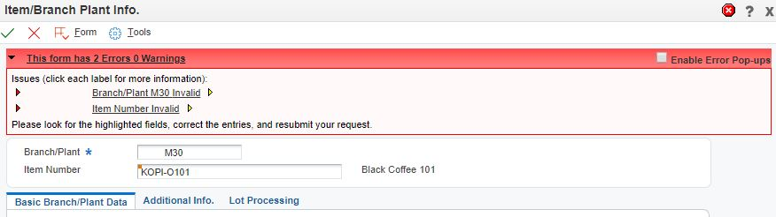

This document is a case study only and same shall not encompass possible cause and resolution. This document can be useful only when the issue is user specific and issue is caused by corrupted data or database cache.
P41026 issues errors,
Error Branch/Plant M30 Invalid Warning
A form level error has occurred.
CAUSE: Branch/Plant M30 is not set up in the Constants file.
RESOLUTION: Set up Branch/Plant in the Constants file.
ER Details:
Form P41026_W41026A
Control Id 162
Control Title GetItemMasterInfo
Event Button clicked
Line No 36
BSFN Details:
Source File b4101390.c
Source Line 273
Error ID 084M
Error Item Number Invalid Warning
A form level error has occurred.
CAUSE. . . . . The Item Number entered does not exist in the Basic Item Master
(P4101).
RESOLUTION . . Enter a valid Item number or add the Item to the Basic Item
Master (P4101).
ER Details:
Form P41026_W41026A
Control Id 162
Control Title GetItemMasterInfo
Event Button clicked
Line No 36
BSFN Details:
Source File n4101060.c
Source Line 33650
Error ID 0267
BSFN DSTR Item 11
when adding Item Branch for existing item number using P41026. This issue is a user specific and the copied user based on problematic user ID does not have issue.
This screen shows the item is valid because it does not issue error so the error in below figure is not reflecting actual issue.

Above print screen shows that the Branch and Item both appear to be correct.
Note:
Issue is caused by corrupted data from F400095 (Default Locations/Printers) which stores the Default Branch which P41026 defaulted in the duplication steps indicated.
Based on call object kernel log (namely, jdedebug log which dumps the business functions),
A. The user USER-A has a default branch M30 (this is why the issue is user specific) as below,
Calling Business function GetDefaultBranch from Level 1 for USER-A. Application Name [P4101], Version [ZJDE0001] (BSFNLevel = 1)
IN->[ 1] szBranch [ ]
IN->[ 2] szApprovalRouteCode [ ]
Entering JDB_FetchKeyed (hRequest 800000000000000000008000B223F7C0) ************** This simply indicates F40095 is a member of database cache (F98613) ***************
Fetched the record (hRequest 800000000000000000008000B223F7C0)
OUT->[ 1] szBranch [M30] ********** The problem lies here either the data from F40095 is problem or, the cache is corrupted *************
OUT->[ 2] szApprovalRouteCode [ ]
Return value is 0 for GetDefaultBranch. (BSFNLevel = 1)
: Correct representation is OUT->[ 1] szBranch [ M30] **** based on the Display Rule *RAB so '9 spaces and M30, " M30" *****
B. The value from database cache F4095 is formatted wrongly,
Calling Business function VerifyAndGetBranchPlantConstants from F4101ProcessMasterData for USER-A. Application Name [P41026], Version [ZJDE0001] (BSFNLevel = 2)
IN->[ 1] szSystemCode [ ]
IN->[ 2] szBranchPlant [M30 ]
IN->[ 3] cErrorCode []
IN->[ 4] szErrorMessageID []
...
IN->[105] cConsignmentBranchFlag []
SELECT * FROM PRODDTA9/F41001 WHERE ( CISY = SPACE AND CIMCU = 'M30' )
No More Data found (hRequest 800000000000000000008000B2288F10) ************ In searching data from F41001 which does not return any ***********
ERROR INFO JDEERR - ID= 0, Error= 084M - /OneWorld/Packages/PD910FA/source/COPBASE/b4101390.c, Line= 273